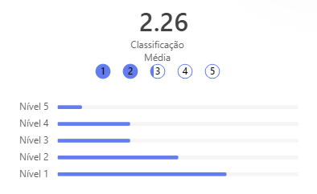

Conheça Nossos Objetivos
Na Tech Sustentável, alinhamos nossas ações aos Objetivos de Desenvolvimento Sustentável (ODS) da ONU, que visam promover um futuro mais equilibrado e sustentável para todos. Consideramos essenciais as seguintes áreas de foco:
Os Objetivos de Desenvolvimento Sustentável foram estabelecidos em 2015, pela Organização das Nações Unidas (ONU), e se tratam de um apelo global à ação de erradicar a pobreza, defender o meio ambiente e garantir que as pessoas vivam num ambiente de paz e prosperidade. Dito isso, o grupo decidiu trabalhar sobre os objetivos 4 e 13 sendo eles a Educação de Qualidade e Ação Contra a Mudança Global do Clima, respectivamente.
ODS 4 - Educação de Qualidade:
Acreditamos que uma educação de qualidade é fundamental para impulsionar a mudança e o desenvolvimento sustentável. Estamos empenhados em apoiar iniciativas que promovam o acesso a uma educação de excelência para todos.
ODS 13 - Ação Contra a Mudança Global do Clima:
Atuamos para mitigar os impactos das mudanças climáticas, promovendo soluções e tecnologias que ajudem a reduzir as emissões de gases de efeito estufa e a promover a sustentabilidade ambiental.
Economia Circular
Economia Circular se refere ao ciclo de vida de um produto, o que inclui o reaproveitamento de seus resíduos como matéria-prima ou insumo para outras indústrias, já a sustentabilidade é um conceito mais amplo que engloba uma série de boas práticas, voltadas ao meio ambiente, às pessoas e, também, aos processos produtivos. Então, a circularidade faz parte das ações sustentáveis das organizações. Ao adotar a circularidade em seus processos produtivos, a organização reduz resíduos, que poderiam impactar diretamente o meio ambiente, além de gerar recursos e renda para outras empresas e a comunidade local.
Consequências da Economia Circular
Diante dessas afirmações, a implementação da economia circular no modo atual de produção pode gerar diversos impactos, que são, em sua maioria, positivos. A economia circular reduz significativamente a extração de recursos naturais, também reduzindo o desperdício de materiais, aumentando a eficiência da produção e barateando o custo para produzir. Além dos benefícios econômicos, a imagem das empresas que adotam a economia circular tende a melhorar, sendo vistas como organizações sustentáveis que contribuem para o bem-estar mundial.
Para mais de questões econômicas e corporativas, a economia circular é, em sua essência, uma alternativa para a preservação do meio ambiente. Como observamos nas últimas décadas, espécies da fauna e flora mundial têm entrado em extinção, bem como recursos naturais que são explorados sem qualquer precaução ou cuidado. Dito isso, a economia circular visa a preservação do meio ambiente, reduzindo os níveis de exploração de recursos naturais, sem impactar negativamente na economia.
Empresas que adotam a economia circular:
Ao se deparar com todos esses benefícios, diversas empresas começaram seu plano para se adaptar a economia circular, empresas essas que tem sua influência reconhecida mundialmente, como:
Coca-Cola: Conhecida por ser a maior empresa de bebidas do mundo, a Coca-Cola possui diversas iniciativas em direção à economia circular, a principal delas é a reciclagem de garrafas pet.
Ikea: Sendo uma das principais fabricantes de móveis no exterior, a Ikea tem como iniciativa a compra de móveis não utilizados pelos seus clientes.
Nespresso: Conhecida pelas máquinas de café e bebidas, a empresa criou uma solução própria para reutilizar cápsulas de alumínio, recolhendo, no ano de 2019, 22% das suas cápsulas vendidas nos estados de SP e RJ.
Resultado da pesquisa:
No formulário elaborado em sala, o grupo obteve 29 respostas, referentes às perguntas a seguir:
1. Você possui eletrônicos (computadores, celulares, baterias, etc) que desejaria fazer o descarte parados em casa? Se sim, quantos?
Como vemos de acordo com o gráfico acima, a maior parte dos entrevistados possuem quantidades consideráveis de aparelhos para descarte.
2. Você apoiaria e utilizaria um ecoponto próximo à sua casa? Por que?
De acordo com o gráfico a seguir, todos os entrevistados indicam que utilizariam um ponto de coleta de lixo eletrônico, mas para isso o ecoponto deveria estar em uma localização próxima às suas casas.
3. Qual tipo de lixo eletrônico você possui?
Aqui podemos observar que dispositivos móveis e periféricos compreendem a maior parte do lixo eletrônico possuído pelos entrevistados.4. Que tipo de descarte você faz com seu lixo eletrônico?
De acordo com essas respostas, vemos que a maior parte dos entrevistados guardam seu lixo eletrônico, o que pode sugerir a urgência da criação de novos pontos de coleta.
5. Você conhece ou já ouviu falar dos riscos do descarte irregular de lixo eletrônico? Qual?
Nessa pergunta, o grupo optou por disponibilizar respostas dissertativas, em
resumo, cerca de 45% dos entrevistados desconhecem o risco do descarte
irregular de eletrônicos, enquanto 55% conseguiram apontar um risco causado
pelo descarte incorreto.
Isso reforça o pensamento de que muitas vezes as pessoas reconhecem que
devem realizar o descarte correto, mas pela falta de incentivo e a falta de pontos
de coleta acessíveis estas deixam fazê-lo.
6. Você já participou de uma campanha de conscientização sobre o descarte de lixo eletrônico no seu meio social?
Essa pergunta teve o propósito de identificar o quanto campanhas de conscientização sobre o tema chegaram de fato ao conhecimento da população e, ao que indicam as respostas, as campanhas se mostraram ineficientes, portanto, nesse projeto, a divulgação seria algo importante de pontuar.
7. Existem pontos de coleta de lixo eletrônico próximo à sua casa? Se sim, como você avaliaria o funcionamento?
As pessoas que responderam essa pesquisa, deram claros indícios de que, mesmo nos pontos de coleta já existentes, o funcionamento deixa a desejar. tendo uma nota média de 2,26.
8. Você acha que a criação de um ponto de coleta em uma escola perto de sua casa facilitaria no descarte de eletrônicos?
De acordo com as respostas, podemos observar que todos os entrevistados creem que o descarte de eletrônicos poderia ser facilitado com a criação de pontos de coleta próximos às suas casas, como em escolas.
9. Você já descartou algum eletrônico? Se sim, foi feito corretamente?
O gráfico mostra que por vezes as pessoas optam por guardar seu lixo eletrônico, o que pode indicar insegurança em relação ao descarte por parte das pessoas.
10.Você acha que existe uma consciência sobre o descarte de eletrônicos em sua comunidade?
Para reforçar a análise da eficiência das campanhas e outros meios de conscientização, elaboramos essa pergunta, que mostra que a visão das pessoas sobre a eficácia das campanhas e meios de conscientização pode não ser positiva.
Conclusão
Embora as pessoas entrevistadas possuíssem algum conhecimento sobre a necessidade do descarte correto de aparelhos eletrônicos, elas se viram incapazes de mudar suas ações em relação a isso. Com os dados obtidos na pesquisa, o grupo identificou que a falta de pontos de coleta é uma das causas principais no que diz respeito ao descarte incorreto de aparelhos eletrônicos e, portanto, concluímos que o projeto de criação de um ponto de coleta de lixo eletrônico na escola Etec Antônio Furlan apenas iria beneficiar os moradores da região, bem como o meio ambiente.
Conheçam Nossos Participantes
Analice Caldas
Angela Epifanio
Gustavo Ferreira
Heitor mimi
.png)